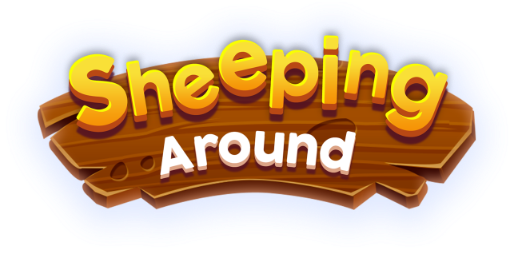

Description
Sheeping Around is a multiplayer (1v1) card dueling game about grazing (and stealing) sheep. There's three sheep on the board, and one of the players is the Shepherd and the other is a Thief. As a shepherd attach graze cards to sheep to graze, and when you're done, use "Whistle" to take them home. As a thief, attach lure cards to sheep to lure them and when they're lured, steal them away. The first person to get two sheep wins. But the tricky part is all the other cards that make your opponents' lives harder. You can lay traps, guard sheep, reduce graze / lure values and use special bonus cards to your advantage. Every game you win gives you experience and coins, which count towards your level and allow you to purchase better cards. But as you level up, the opponents get stronger too. (The game automatically matches you with another player with similar experience.) Add deck-building and card collection, and you get the basic elements of a CCG. All in all, an exciting game that will make you ask your friends, “Will you sheep with me?"
History
Inception at BYOG 2012
Sheeping Around was conceptualized as far back as BYOG (Build Your Own Game) competition before NASSCOM GDC 2012. It was a game jam where one of the themes was "sneak". Initially it was conceptualized as a grid-based and tactics-like turn-based strategy game. You would select a character in your team, and then move and do an action for each of them. It was inspired by Final Fantasy Tactics.
Reboot as a Table-Top Card Game Prototype in 2017
In Mid 2017, I started playing a lot of card games, like Hearthstone, Card Thief, Card Crawl, Reigns, Exploding Kittens, Meteorfall and Miracle Merchant. Inspired by those games, I started to prototype Sheeping Around as a card game. Initially I was exploring it as a solitaire crawler, but later one of the experiments were as a table-top multiplayer game. To my surprise, people started enjoying it and I began expanding on the idea. Eventually I began coding a digital web based prototype for it which resulted in people spending hours on. A simple blocky prototype without any art that people spend hours playing is a proof that the base concept is fun.
Digital Version - 2018
Starting 2018, I contacted Rashi for art, and began turning this into a full-fledged mobile game for iOS and Android. In May, I submitted the game to the first ever Google Indie Games Accelerator. While it wasn't selected there, the program helped me boost the development by several folds and I had an alpha build ready for both iOS and Android by Mid June. The game is currently in open beta on both the platforms.
Features
- Play as Shepherd or Thief
- Smart multiplayer match-making
- Level based progression
- New cards unlock at every level
- Marketplace of cards to buy
- Customize your deck as you progress
- Challenge your friends
- Recruit special characters (allies)
- Leaderboards and achievements
Videos
Tutorial Gameplay — YouTube
Quick Gameplay — YouTube
Images
{kind=link}
{kind=link}
{kind=link}
{kind=link}
Logo & Icon
{kind=link}
About Fleon Labs
- Boilerplate
- Fleon Labs is a one-man indie game studio based in Delhi, India and also a pseudonym for me (Himanshu). I collaborate with various talented people from all over the world and make unique games for niche audiences. The term "Fleon" was coined as a tribute of love for Adobe's Flash platform and games made using it. "Fleon" means "Flash will live for eons", but unfortunately Flash isn't alive anymore. But my inspiriation from Flash remains and I will continue to make games using that inspiration.
- More information
- More information on Fleon Labs, our logo & relevant media are available here.
Sheeping Around Credits
- Himanshu Kapoor
- Game Design & Programming
- Rashi Chandra
- Concent Art & Illustration
- Robinson Millaguin
- Animation & Rigging
- Sound Design
- Elise Kates
Contact
- Inquiries & Support
- info@fleon.org